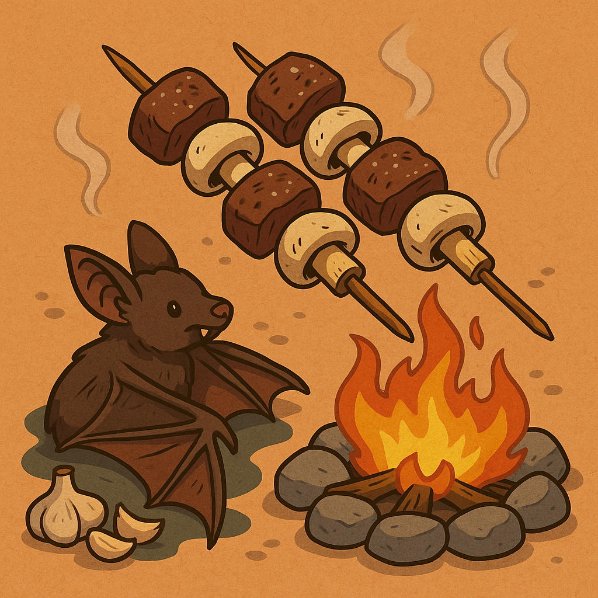
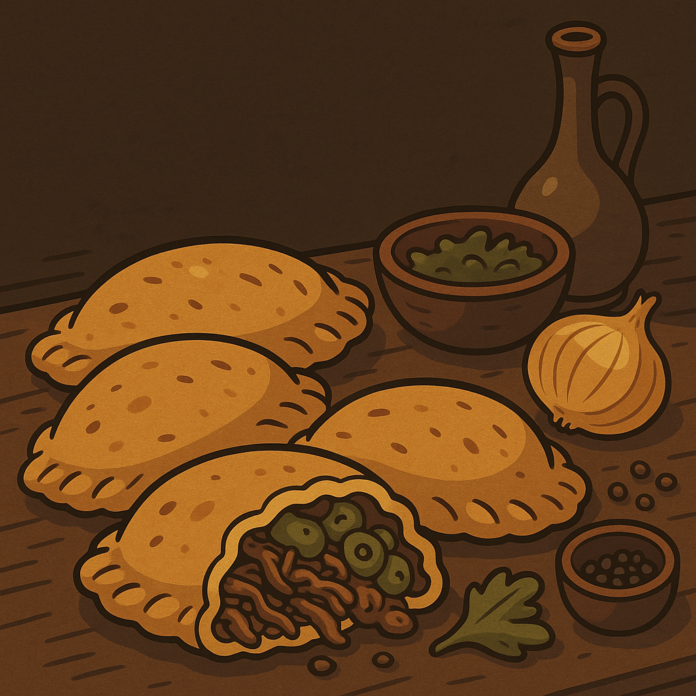
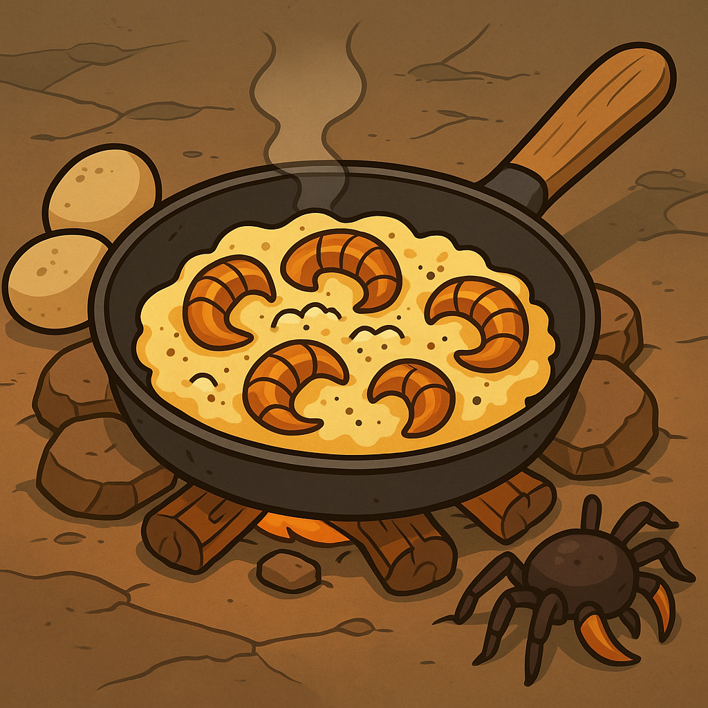

Cocina del monstruo¶
La serie de libros de Cocina del monstruo proporcionan una alternativa a los aventureros de obtener comida a través del uso de ingredientes obtenidos al matar monstruos. Se dice que estas recetas también proporcionan ciertas habilidades de los monstruos que las componen.
La idea del libro está inspirada en el manga de 'Dungeon Meshi', también conocida como 'Tragones y mazmorras' en español o 'Delicious in Dungeon' en inglés.
Libro #1 - Cavernas deliciosas¶
Libro de recetas usando monstruos como ingredientes. Cada receta ofrece un bonificador especial a los que las coman. No obstante, este bonificador no está explicado en el libro (los aventureros han de identificarlo).
Brochetas de Murciélago Gigante con Setas de Caverna¶
Un plato rústico y sabroso, típico de las expediciones prolongadas en cavernas húmedas. La carne del murciélago gigante, bien cocinada, ofrece un sabor intenso que combina a la perfección con las suaves setas de caverna.
“¡No tires esas alas, sargento! Bien adobadas, valen más que una ración de campaña.” — Capitán Durn, cazador de grutas

Ingredientes (4 raciones)¶
- 2 muslos de Murciélago Gigante fresco (el resto se guarda para caldo)
- 6 Setas de Caverna medianas, no luminosas
- 2 dientes de Ajo Salvaje de Subsuelo (opcional, para paladares exigentes)
- 1 pizca de Sal Gris de Piedra, recogida de depósitos subterráneos
- 4 Palitos largos de madera o hueso (para brochetas)
Preparación¶
-
Preparar la carne: Extrae los muslos del murciélago con una daga limpia. Retira membranas y nervios visibles. Corta la carne en dados medianos.
-
Seleccionar y limpiar setas: Elige setas firmes de sombrero cóncavo. Evita las fluorescentes (podrían ser alucinógenas o letales). Límpialas con un trapo húmedo.
-
Ensamblar las brochetas: Alterna un dado de carne con una seta en los palitos. Asegúrate de dejar algo de espacio entre cada ingrediente.
-
Asar a fuego medio: Cocina sobre brasas o una llama controlada. Gira constantemente durante 8-10 minutos. La carne debe quedar crujiente por fuera y jugosa por dentro.
-
Sazonar al gusto: Espolvorea sal gris y ajo picado justo antes de retirar del fuego.
Consejo del chef Si logras encontrar un musgo negruzco cerca de los nidos de murciélagos, puedes usarlo como cama para servir las brochetas. Absorbe la grasa y le da un aroma a tierra muy apreciado por los elfos oscuros.
Bonificador: Vista Nocturna Nutritiva
Durante 1 hora tras consumir esta receta, el personaje obtiene ventaja en pruebas de Sabiduría (Percepción) que dependan del oído o el olfato mientras esté en oscuridad o penumbra.
Empanadas de Carne de Zombie Fúngico¶
Cuando los recursos escasean y los muertos caminan, los verdaderos cocineros de mazmorra no desperdician nada. Esta receta transforma carne peligrosamente ambigua en un plato reconfortante con un toque fúngico.
“Todo es comestible si sabes hervirlo el tiempo suficiente.” — Miri “Mandíbula Rápida”, chef de campo de la Guardia Gris

Ingredientes (4 raciones)¶
- 300 g de carne de Zombi Fúngico (extremidades, preferiblemente muslo o brazo)
- 1 Cebolla de Túnel, picada
- 1 puñado de Musgo Plano, lavado y escurrido
- Masa de pan duro o ración rancia rehidratada
- Sal y pimienta negra de caverna
- Agua caliente y brasas
Preparación¶
-
Purificar la carne: Hierve la carne del zombi fúngico en agua con sal durante una hora. Espuma y cambia el agua si huele demasiado dulce. (Si el color cambia a púrpura, descarta la pieza).
-
Preparar el relleno: Desmenuza la carne hervida y sofríe en una sartén con cebolla y musgo plano hasta que la mezcla tome color tostado y suelte aroma a tierra.
-
Formar las empanadas: Aplasta porciones de masa en forma de disco. Rellena con una cucharada del preparado y ciérralas doblando y presionando los bordes.
-
Cocción: Cocina las empanadas sobre una piedra caliente cerca del fuego o en una sartén con grasa de rata. Gira ocasionalmente hasta que estén doradas y crujientes.
Precaución del Cazador Los zombis fúngicos con ojos cubiertos de moho blanco suelen estar demasiado contaminados: no los cocines. El hongo entra por las mucosas.
Bonificador: Digestión Pútrida
Durante 1 hora tras consumir esta receta, el personaje obtiene resistencia al daño necrótico, pero sufre desventaja en tiradas de Carisma (Persuasión) debido al hedor y el aspecto enfermizo.
Huevos Revueltos con Sacabocados de Araña de Caverna¶
Un desayuno rápido y enérgico, popular entre exploradores del subsuelo y tramperos goblin. Las glándulas de la araña, salteadas, aportan un crujido umami que despierta los sentidos… y tal vez algo más.
“¿Ves una araña del tamaño de un perro? No la mates. Cocínala.” — Sanna Ojo-Rojo, herborista del Bajoespinazo

Ingredientes (2 raciones)¶
- 2 Glándulas bucales de Araña de Caverna (limpias y no venenosas)
- 4 Huevos de ave de gruta (pueden usarse de reptador si se baten bien)
- 1 cucharada de Manteca de rata de túnel (o grasa de caza)
- Sal al gusto
Preparación¶
-
Limpieza cuidadosa: Extrae las glándulas bucales cortando desde la base de las mandíbulas. Las glándulas venenosas son azuladas: no las uses. Busca las de color ámbar.
-
Salteado de las glándulas: Corta las glándulas en rodajas finas. Fríelas en manteca hasta que estén crujientes por fuera y algo gomosas por dentro.
-
Huevos revueltos: Bate los huevos con una pizca de sal y viértelos sobre la sartén con las glándulas calientes. Remueve sin parar hasta que el huevo cuaje, pero aún esté cremoso.
-
Servir caliente: Acompaña con pan de hongos o raíces asadas.
Consejo de Fogata Si las glándulas hacen espuma verde al cocinarse, ¡detente! Están contaminadas con bilis de carraspeador y causan alucinaciones auditivas.
Bonificador: Reflejos de Ocho Patas
Durante 1 hora tras consumir esta receta, el personaje puede relanzar una tirada de Destreza fallida (ya sea salvación o prueba de habilidad). Este efecto solo puede usarse una vez.